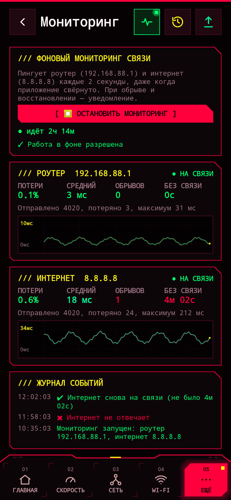

Как доказать провайдеру, что интернет пропадает
«С нашей стороны всё работает» — обычный ответ поддержки. Чтобы проблему начали решать, нужны время, длительность и доказательство, что дело не в вашем Wi-Fi. Всё это может собрать телефон.

1. Включите мониторинг
В NetWatch откройте Ещё → Мониторинг и нажмите Запустить мониторинг. Разрешите уведомления и работу в фоне — мониторинг продолжит работать, когда приложение свёрнуто. Держите телефон в Wi-Fi рядом с роутером, лучше на зарядке.
2. Он сам покажет, где проблема
Каждые 2 секунды NetWatch отдельно проверяет ваш роутер и интернет.
- Роутер не отвечает → проблема дома: Wi-Fi, сам роутер или его питание.
- Роутер отвечает, а интернет нет → проблема на стороне провайдера. Именно это и нужно сказать поддержке.
3. Оставьте его на сутки или дольше
Каждый обрыв записывается со временем начала и длительностью, а при обрыве и восстановлении приходит уведомление. На экране видны потери пакетов, число обрывов и общее время без связи.
4. Добавьте замеры скорости
Бывает, что интернет не пропадает, а тормозит в определённые часы. Сделайте несколько замеров Скорости утром и вечером: История покажет среднюю скорость и насколько медленнее бывает в разное время суток.
5. Отправьте отчёт
Нажмите Ещё → Отчёт → PDF. В отчёте — сессии мониторинга с каждым обрывом, потери и время без связи, замеры скорости, сигнал Wi-Fi и параметры сети. Приложите его к заявке или отправьте в чат провайдера.
Что написать в поддержку
Например: «С 18:00 до 23:00 интернет пропадал 7 раз, всего 14 минут. Роутер всё это время был доступен, значит, проблема не в домашней сети. Отчёт прилагаю». Конкретные цифры работают гораздо быстрее, чем «иногда тормозит».
Проверьте свою сеть
NetWatch бесплатный, без рекламы и ничего не собирает.
Обновлено: 2026-10-17